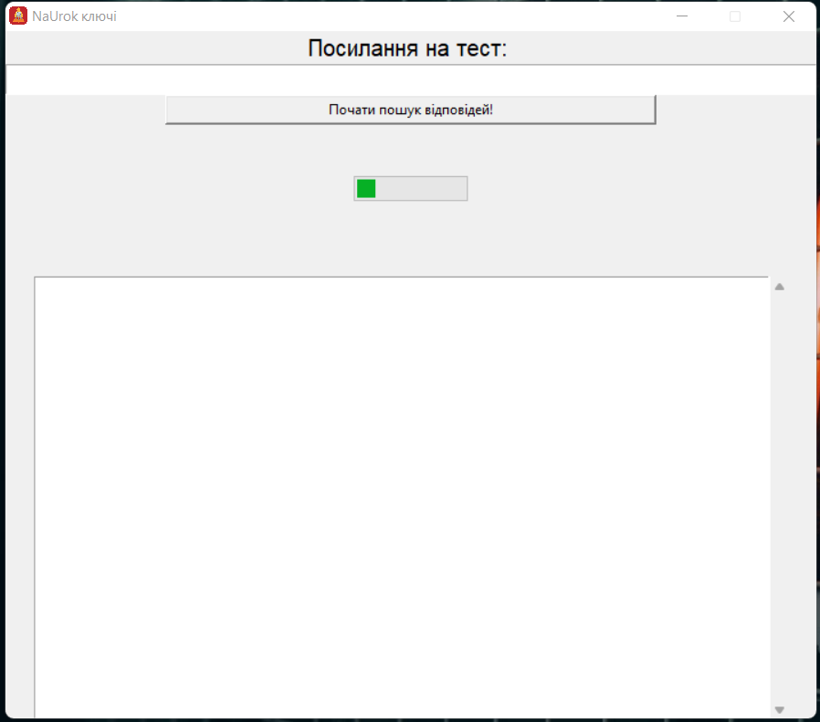

НаУрок ключі - інноваційна програма
для розв'язування тестів з сайту НаУрок.
Що таке НаУрок ключі?
НаУрок ключі - це програма, що допоможе розв'язувати тести з сайту naurok.com.ua

Чому саме ми?
- Безпечність - програма безпечна, не містить у собі віруси.
- Точність - програма знаходить відповіді на тести без помилок.
Завантажити